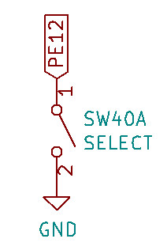
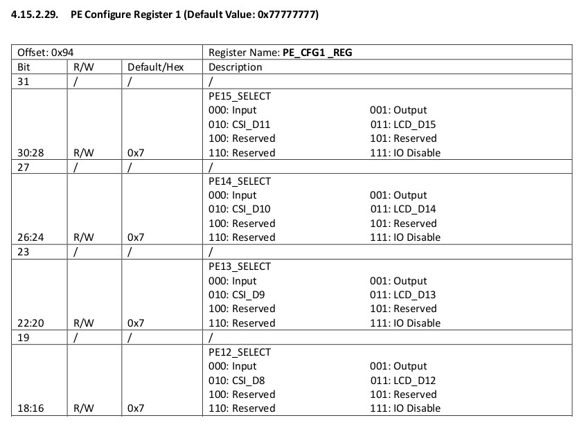
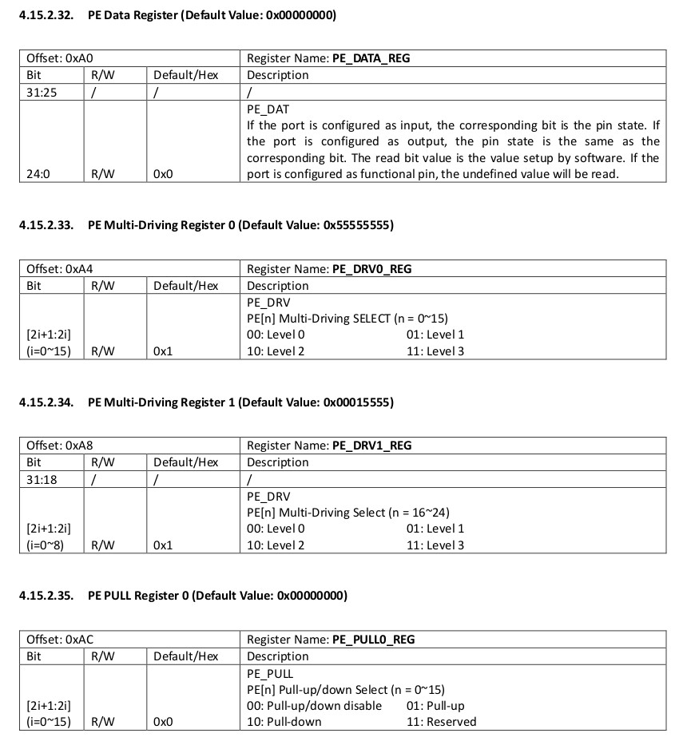
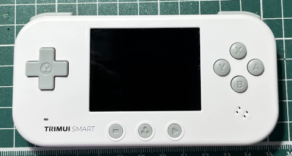
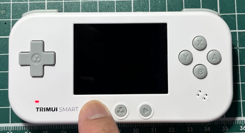

參考資訊：
https://github.com/steward-fu/website/releases/download/datasheet/allwinner_s3_rm.pdf
SELECT按鍵是連接到PE12



.global _start
.equ GPIO_BASE, 0x01c20800
.equ PE_CFG1, (GPIO_BASE + (0x24 * 4) + 0x04)
.equ PE_PULL0, (GPIO_BASE + (0x24 * 4) + 0x1c)
.equ PE_DATA, (GPIO_BASE + (0x24 * 4) + 0x10)
.equ PG_CFG1, (GPIO_BASE + (0x24 * 6) + 0x04)
.equ PG_DATA, (GPIO_BASE + (0x24 * 6) + 0x10)
.arm
.text
_start:
.long 0xea000016
.byte 'e', 'G', 'O', 'N', '.', 'B', 'T', '0'
.long 0, __spl_size
.byte 'S', 'P', 'L', 2
.long 0, 0
.long 0, 0, 0, 0, 0, 0, 0, 0
.long 0, 0, 0, 0, 0, 0, 0, 0
_vector:
b reset
b .
b .
b .
b .
b .
b .
b .
reset:
ldr r0, =PE_CFG1
ldr r1, =0x00000000
str r1, [r0]
ldr r0, =PE_PULL0
ldr r1, =0x55555555
str r1, [r0]
ldr r0, =PG_CFG1
ldr r1, =0x11111111
str r1, [r0]
ldr r0, =PG_DATA
ldr r1, =0xffff
str r1, [r0]
ldr r2, =0xfbff
0:
ldr r0, =PE_DATA
ldr r1, [r0]
ror r1, #2
orr r1, r2
ldr r0, =PG_DATA
str r1, [r0]
b 0b
.end
完成

